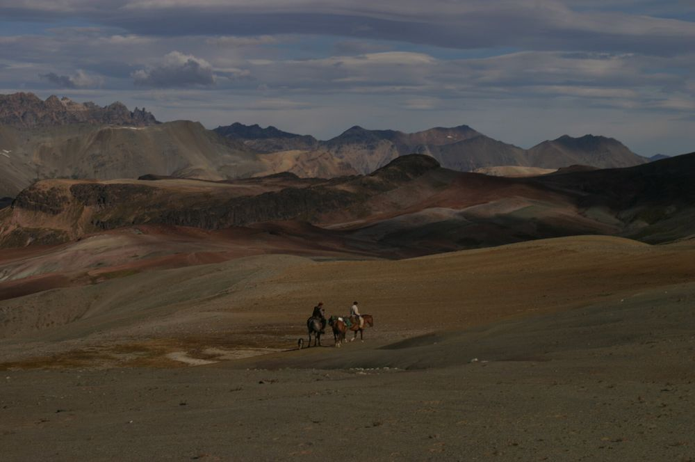
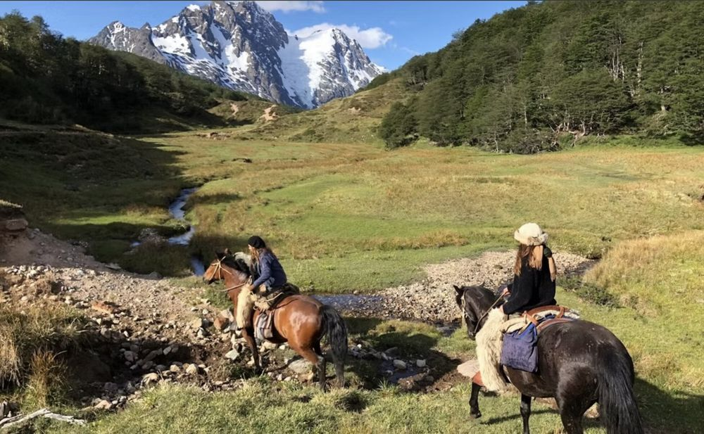
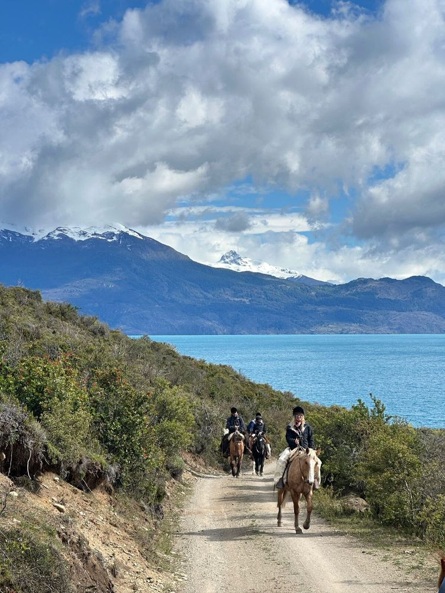
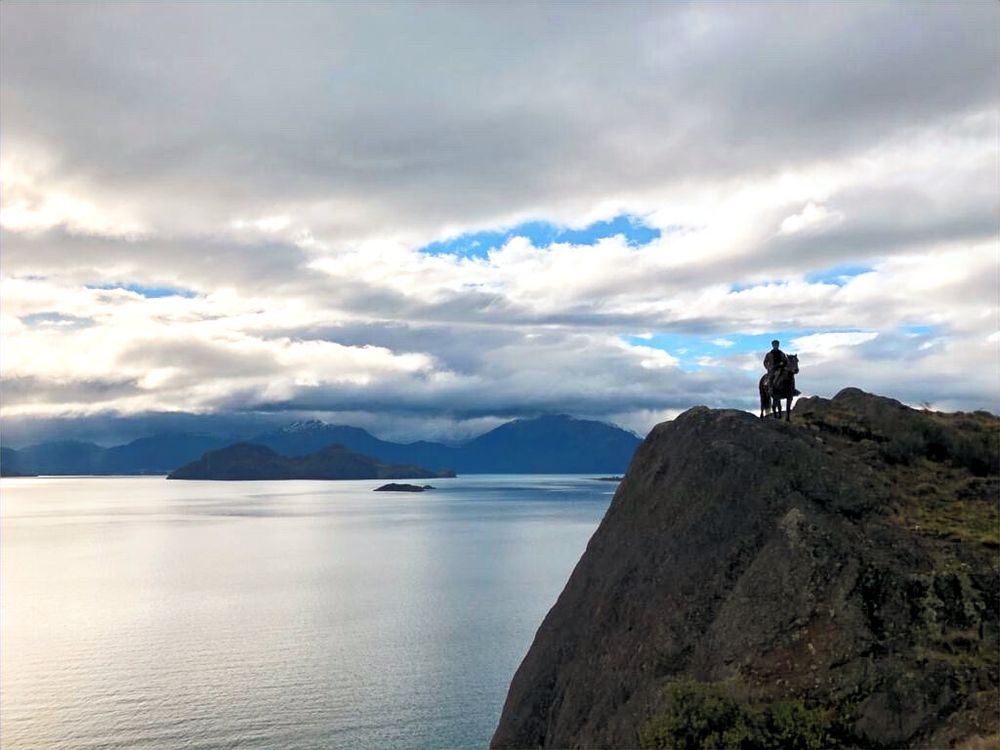
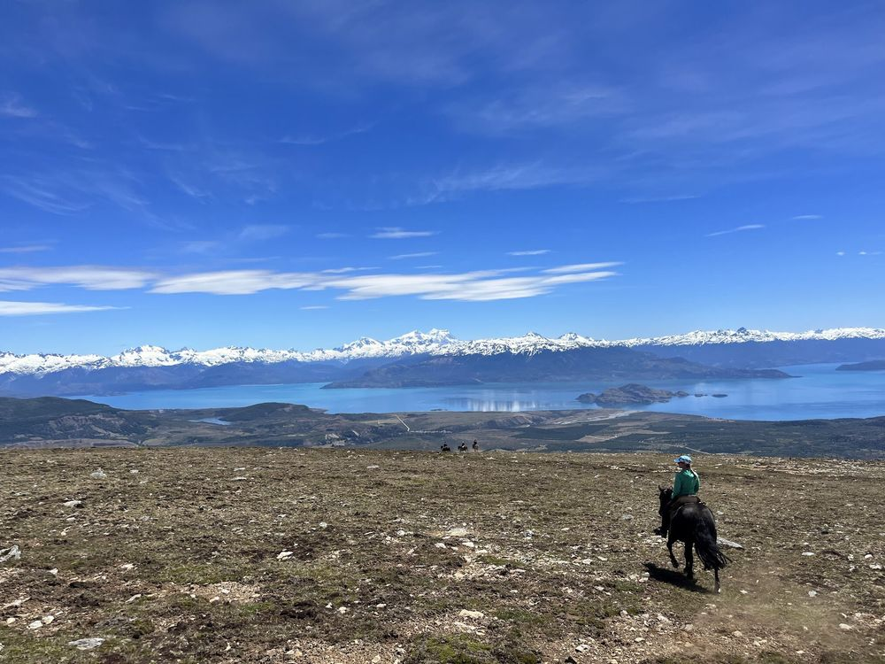

Fósiles Chilesaurus, Escoreal de Leichtle
Día completo
Una cabalgata hacia los escoriales de Leichtle, lugar donde veremos el lago a los 1500 mt de altura. Una corta ascensión nos llevará a ver las tierras de colores, vistas asombrosas, y los huesos petrificados de la última especie de dinosaurio encontrado, el “Chilesaurus”. El almuerzo será a orillas de un bosque alto, rodeados de verde, de pampas y colinas, fuera de un puesto antiguo gaucho, un pequeño puesto en el fin del mundo.

Santa Clara / Pampa del Zorro / Montañoso
2 a 3 días
Una travesía de 2 o 3 días, en la cual nos dirigiremos al corazón de la Patagonia, esas tierras que pocos pisan, lugares que solo el hombre gaucho frecuenta. Un viaje que congrega ríos, bosques encantados, escoriales adornados de colores, glaciares, valles y cordilleras. Viajaremos hacia la Pampa del Zorro para deslumbrarnos con los colores del cordón del Furioso, y allí descansar en la tranquilidad de la Pampa. Comeremos y dormiremos bajo las estrellas. El caballo será nuestro compañero y guía. Una experiencia realmente única.

Cerro Pardo / Almuerzo Laguna Norte
6 horas
La cabalgata por Cerro Pardo nos entregará una privilegiada vista del Lago y de los campos de hielo, convirtiéndose la ruta entera en un verdadero mirador del General Carrera. Seguiremos nuestro recorrido sumergiéndonos en un bosque de lenga, corazón del cerro, para llegar a orillas de la Laguna la Guitarra, lugar donde almorzaremos y disfrutaremos, rodeados de árboles, variedad de aves, cerros y agua.

Costa General Carrera / Almuerzo en Pampa Cosmelli
6 horas
Recorrer, caminar, galopar a orillas del Lago General Carrera, será el primer tramo de nuestro recorrido. Un paseo lleno de vistas y sensaciones. Tras una hora de cabalgata por la costa del lago, subiremos para conocer un poco más del funcionamiento de la Estancia, sus animales y la vida del hombre Gaucho. Como siempre, buscaremos un buen rincón, para ahí detenernos a descansar, tomar algo y almorzar.

Caracuces Bramador, Ruta de Pioneros / Almuerzo
8 a 9 horas
Subiremos por arenales, ñirantales y bosques de lenga por aproximadamente 3 horas, hasta alcanzar el puesto de Caracuces, un escondite al fin del mundo, donde nos detendremos a dar descanso a los caballos y a disfrutar de un aperitivo. Luego comenzaremos una subida abrupta durante 1,5 horas, hasta alcanzar la zona de escoriales; la ruta por el escorial es potente, se alcanza una vista privilegiada del Lago General Carrera a los 1350 metros de altura, acompañando por el poniente los Campos de Hielo Norte y San Valentín. Un buen almuerzo y un descanso, para luego continuar con nuestra travesía.